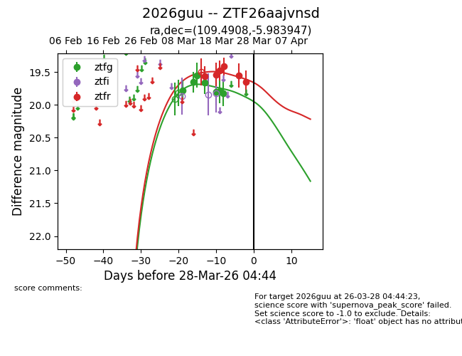
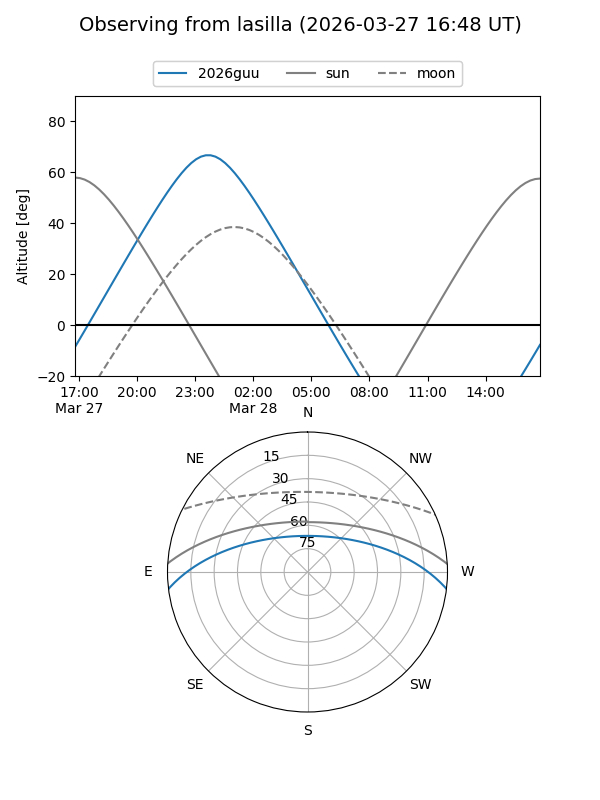
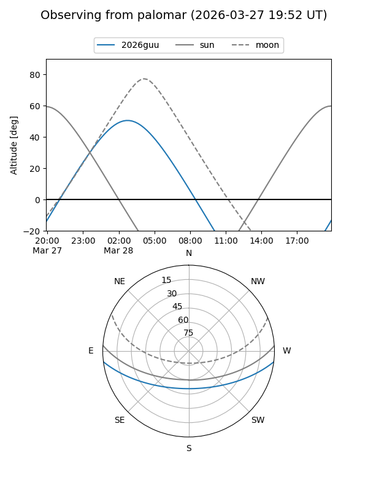
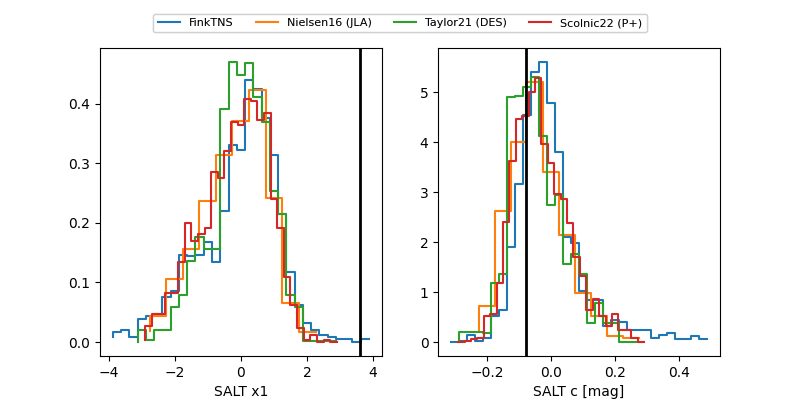

2026guu
Target 2026guu at 2026-03-28 04:47
Aliases and brokers:
FINK: link
Lasair: link
ALeRCE: link
TNS: link
YSE: link
alt names
ZTF26aajvnsd (ztf,fink_ztf)
2026guu (tns,yse)
Coordinates:
equatorial (ra, dec) = 109.4908,-5.98395
equatorial (HMS+DMS) = 07:17:57.79,-05:59:02.21
galactic (l, b) = (221.2906,+3.13448)
Flags:
Photometry:
last ztfg=19.83, ztfr=19.65
7 ztfg, 6 ztfr detections
Lightcurve

Visibility


Additional plots
